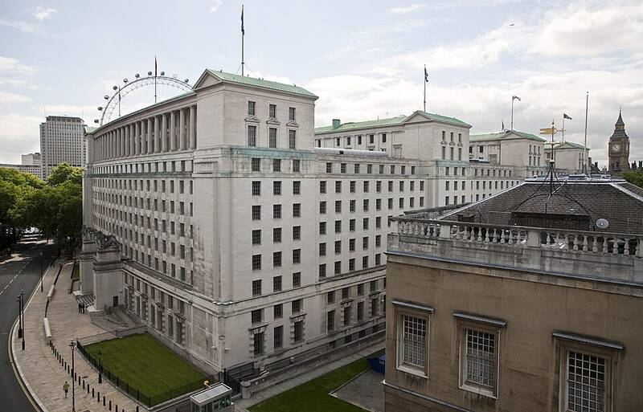

Ministry of Defence UFO desk
Whitehall, London, UK

The UK Ministry of Defence collected UFO reports for decades before closing its UFO desk in 2009. Its files were released through the National Archives between 2008 and 2013. 1
Open in the interactive Watcher
Related
- Nick Pope Person
Sources
- Final tranche of UFO files released (press release) The National Archives (UK), June 21, 2013